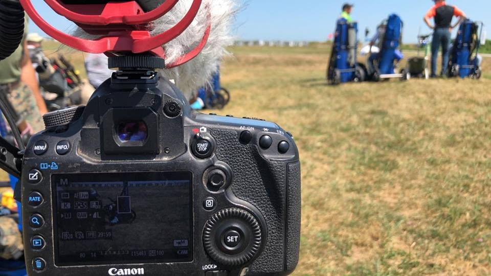

- Yamil Casarreal
- Home
- More About Me
- Photography and Videography
My Story
My programming journey first began in High School when I picked up Gamer Maker Language or GML. With GameMaker I learned to make platformers, side-scrollers, and top-down shooters.
When I finished all my training in the Marine Corps, I finally had free time to pick up programming again. With tutorials, I learned c# to make games in the Unity Engine.
I took an interest in web-development when I watched youtubers get into big companies with the use of treehouse's tech degrees
I plan to use everything I learn in this course to make myself a website portfolio when I start making video games.

Other Than Programming
Outside of Programming, I'm a Photographer and Videographer in the United States Marine Corps.
I've never wanted to be a photograpger or videographer but I felt like the military provided a good foundation and learning experience for my future.
And it has! I learned a lot, and I still have some time in but I never let it get in the way of my passion, which is coding.
